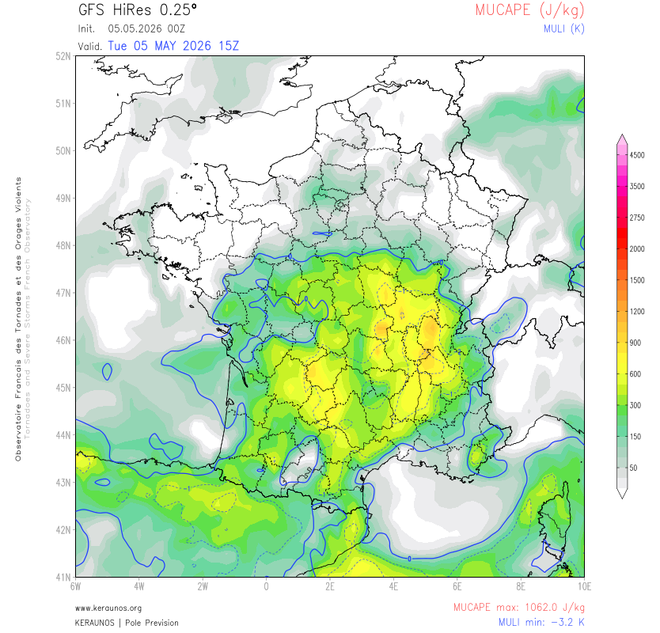
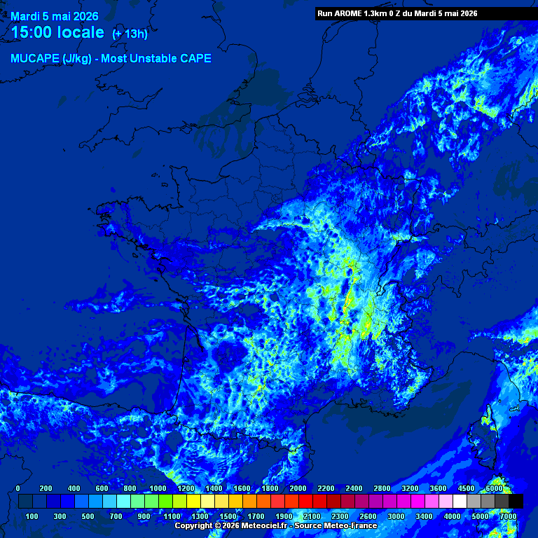
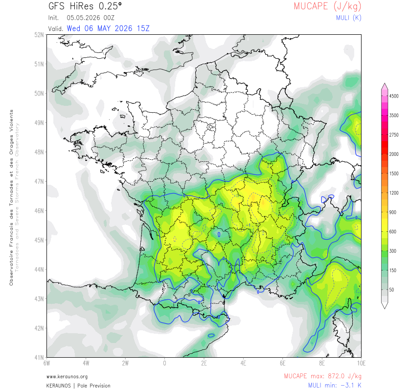
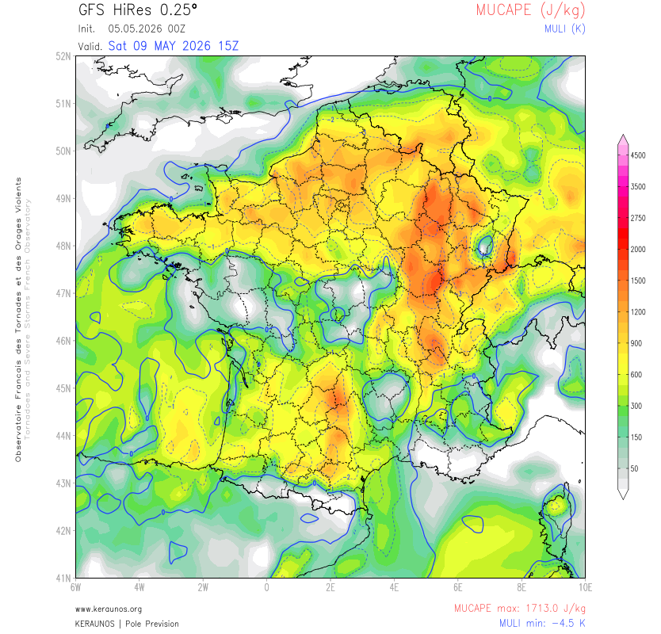
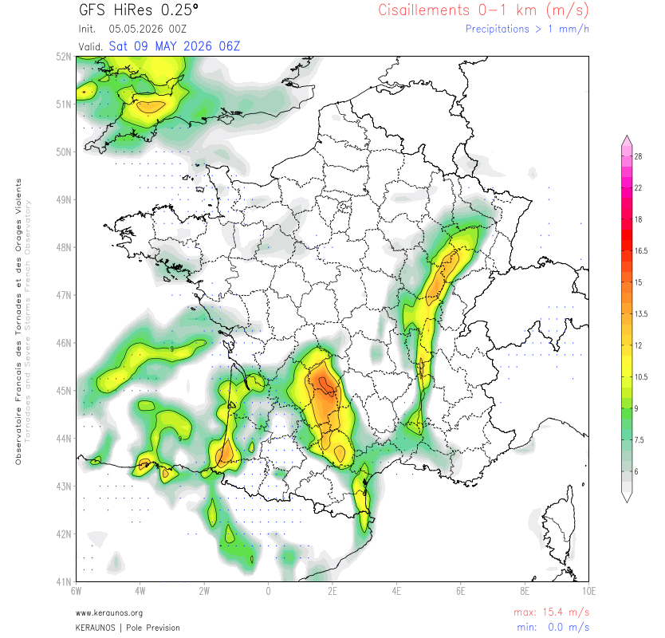
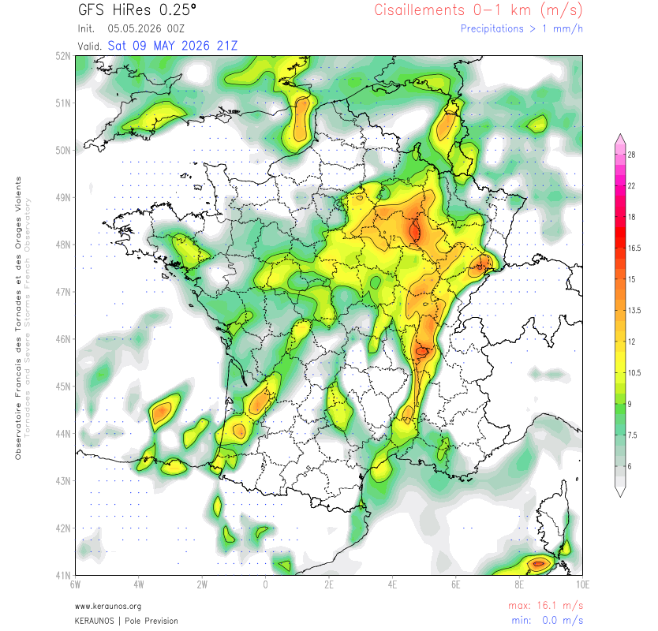
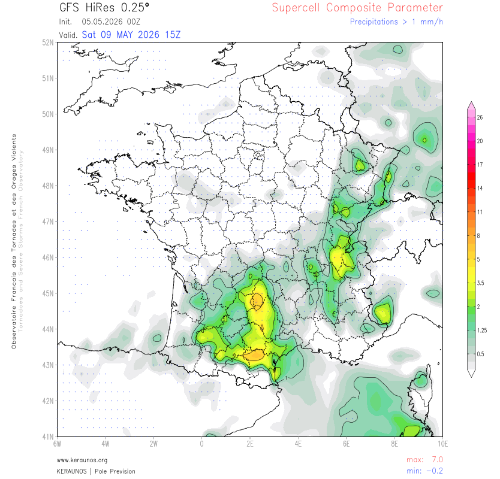
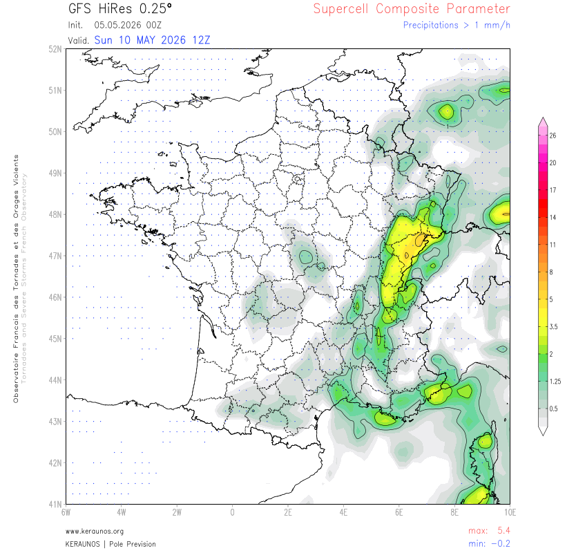

Risque orageux modéré (1–2/5) dans un contexte de transit d'un thalweg d'altitude sur la France. Un minimum dépressionnaire très étiré s'est creusé dans la nuit entre le nord de la France, l'Allemagne et l'ouest de la Pologne en sortie gauche de jet. Une convergence peu mobile matérialise un front ondulant dont la partie sud est instable.
De l'air chaud et humide en basse couche garantit une hausse de l'instabilité par évolution diurne. MUCAPE 800–1200 J/kg sur les 2/3 sud. Grand quart sud-est plus actif à l'avant d'une anomalie de basse tropopause. ISO attendu : 6 à 12 (00h–00h loc.).
Pour la Côte-d'Or : risque 1–2/5, orages faibles à modérés par évolution diurne. Risque plus marqué sur l'axe Alsace / moyenne vallée du Rhône. Probabilité de tornade : 0 — Probabilité de grêle > 5 cm : 0.
Le run GFS 00Z confirme une instabilité modérée sur la Côte-d'Or. Le MUCAPE (700–900 J/kg) est légèrement en retrait par rapport au run 12Z de la veille, ce qui est normal par rafraîchissement nocturne — l'évolution diurne compensera en cours d'après-midi. Le bulletin Keraunos classe le risque à 1–2/5, avec une convection plus active vers l'axe Alsace / vallée du Rhône.

Le run AROME 0Z du 5 mai représente à 15h locales une ligne convective structurée remontant par le couloir rhodanien. Les noyaux les plus intenses (jaune-vert, ~1200–1800 J/kg) sont localisés sur la vallée du Rhône et l'Ain, en amont direct de la Côte-d'Or. Le département affiche des valeurs intermédiaires cyan (~600–1200 J/kg).

Synthèse : Journée de risque modéré confirmé. Déclenchement convectif entre 15h et 21h locales. Orages modérés avec grêle de faible dimension et fortes pluies localisées. Pas de phénomène violent sur la Côte-d'Or aujourd'hui.
La cohérence entre le run 12Z du 4 mai et le run 00Z du 5 mai est excellente sur cette échéance — le MUCAPE et le MULI varient d'à peine 2% entre les deux runs. L'axe d'instabilité reste concentré sur la Bourgogne, la vallée du Rhône et le Jura. La consommation d'instabilité par les orages du mardi constitue le principal facteur limitant à surveiller.

Le MUCAPE atteint 1713 J/kg en valeur maximale. Sur la Côte-d'Or, les teintes orange dominent, correspondant à 1200 à 1500 J/kg — instabilité forte à très forte. Le MULI à −4,5 K place la région clairement en dessous du seuil d'instabilité sévère (−4 K). La répartition spatiale sur ce run est plus directement centrée sur le nord-est de la France, incluant pleinement la Côte-d'Or dans la zone à risque maximal.

Le cisaillement vertical basse couche (0–1 km) est le paramètre discriminant pour évaluer le potentiel de rotation des orages. Au-delà de 10 m/s, cet indice favorise la formation de mésocyclones. Au-delà de 15 m/s, le potentiel tornadique devient non négligeable. Sur ce run, 16,1 m/s sont atteints sur la Côte-d'Or à 21Z, avec une zone rouge-orange couvrant toute la Bourgogne et l'Alsace. Ces valeurs sont remarquablement élevées pour un mois de mai en France métropolitaine.


Le SCP à 15Z atteint 7,0 — valeur très élevée qui dépasse largement le seuil de 1 (favorable) et de 4 (risque élevé). La Côte-d'Or se positionne dans une zone SCP 3–7 (teintes jaune à orange), confirmant un potentiel supercellulaire réel, non marginal. Le noyau le plus intense se situe sur l'axe Bourgogne / Franche-Comté / Alsace. La carte du dimanche 10 mai à 12Z montre encore un SCP de 5,4, suggérant que l'activité sévère pourrait se prolonger partiellement dans la nuit de samedi à dimanche.


| Date | Éch. | MUCAPE C.-d'Or | MULI | CIS 0–1km | SCP | Risque | Fiabilité |
|---|---|---|---|---|---|---|---|
| Mardi 5 mai | J ✓ | 700–900 J/kg | −3,2 K | — | — | 1–2/5 Modéré | Excellente ✓✓ |
| Mercredi 6 mai | J+1 | 700–870 J/kg | −3,1 K | — | — | Modéré | Très bonne ✓ |
| Jeudi 7 mai | J+2 | Transition synoptique | Faible signal | — | — | Faible a residuel | Bonne ~ |
| Vendredi 8 mai | J+3 | ~600 J/kg | ~−3 K | — | — | Modéré | Moyenne ~ |
| ⚠ Samedi 9 mai | J+4 | 1200–1500 J/kg | −4,5 K | 16,1 m/s | 7,0 | ⚠ Fort–Très Fort | Limitée ⚠ |
| Dimanche 10 mai | J+5 | Résiduel est | — | — | 5,4 | Surveillance | Très limitée |